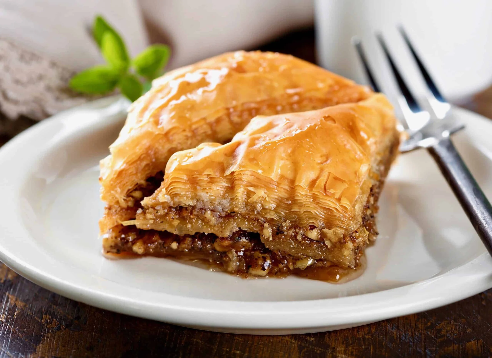

This is a page for a quick and easy Baklava recipe
Hopefully this recipe is enjoyable and checks all your Baklava boxes.
Ingredients:
Servings: 36
- 1 pound of chopped nuts
- 1 teaspoon ground cinnamon
- 1 [16 ounce] package of phyllo dough
- 1 cup butter, melted
- 1 cup of white sugar
- 1 cup of water
- 1/2 cup honey
- 1 tsp vanilla extract
- 1 tsp grated lemmon zest
Insrtuctions:
Follow these instructions in order:
- Preheat the oven to 350F [175C]. Butter a 9x13-inch baking dish
- Toss togethre nuts and cinnamon. Unroll phyllo and cut the whole stack in half to fit the dish. Cover phyllo with a damp cloth while assesmnbling the baklava, to keep it from drying out.
- Place 2 sheets of phyllo in the bottom of the prepared dish. Brush generously with some of the melted butter. Sprinle 2 to 3 tablespoons of the nut mixture on top. Repeat layers until all ingredients are used, ending with about 6 sheets of phyllo.
- Using a sharp knife, cut baklava into 4 long rows, then diagonally 9 times to make 36 diamond shapes. Be sure to cut all the way through the bottom of the layers.
- Bake in the preheated oven until golden brown and crisp, about 50 minutes.
- While baklava is baking, combine sugar and water in a small saucepan over medium heat and bring to a boil. Stir in honey, vanilla, and lemon zest; reduce heat and simmer 20 minutes.
- Remove baklava from the oven and immediately sppon syrup over it. Let cool completely before serving. Store uncovered
Home Page